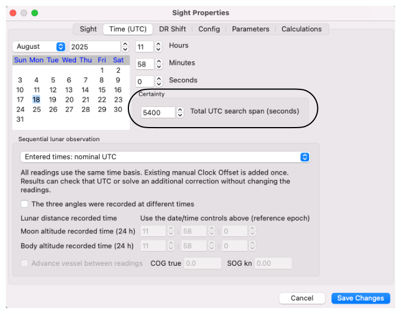

| Previous | Contents | Next |
Lunar distances · Page 43 of 66
Lunar Distance Use Case 1 “Sun-Moon” Aug 18, 2025 11:58
6. Input Lunar Sights into Celestial Navigation Plugin
Time (UTC) Input your chronometer’s time in Coordinated UTC like normal Altitude Sights.
 |
| Open illustration at full size |
Certainty has always been part of the Cel Nav plugin, a very nice feature. For altitude sights, the Circle of Position line width is the Measurement uncertainty. The 2 thin lines drawn down the middle of the COP plot denote Time Certainty. The Lunar solution (v 2.4.66 and v 2.8x) does not produce a Circle of Position plot.
For lunar sights, this field sets the total interval searched for UTC. A new sight defaults to 86,400 seconds, searching ±12 hours around the entered watch reading. Normally leave this unchanged. Older saved sights may retain a smaller span. Unlike the older interpolation calculation, narrowing this interval does not refine the calculation: it excludes potential solutions outside the selected interval.
If the old Lunar sight doesn’t solve, expand the certainty to 86,400 seconds or more.
| Previous | Contents | Next |